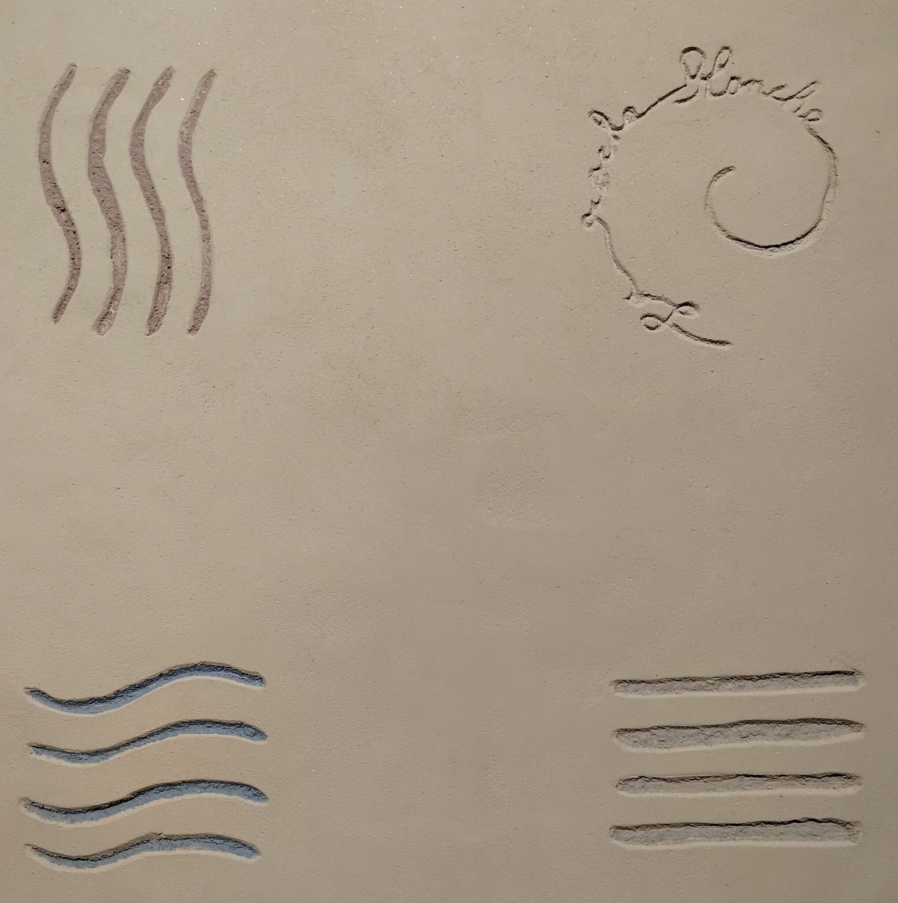

La Roche Blanche

Vos enduits naturels, terre, chaux, sur-mesures à proximité de Rennes
Par Ségolène Préel, artisane en enduits formée chez les
ateliers Vérone...

La Roche Blanche

Par Ségolène Préel, artisane en enduits formée chez les
ateliers Vérone...